Given a category \(S\), functors \(S \to \Cat\) correspond by their very definition to small cocartesian fibrations over \(S\). Furthermore, directed univalence of \(\pi_{\univ}\) implies that natural transformations of functors \(S \to \Cat\) correspond to cocartesian functors between small cocartesian fibrations over \(S\), and we have seen in Lemma 8.2.5 and Proposition 8.2.6 that this assignment is compatible with identity functors and with composition of functors.
The goal of this section is to enhance the correspondence between functors \(S \to \Cat\) and small cocartesian fibrations over \(S\) to a fully fledged equivalence of categories: if \(S\) is a small category corresponding to an object \(s\) of \(\Cat\), we will define a (non-full) subcategory \(\CoCart(S) \subseteq \Cat_{/s}\) of (small) cocartesian fibrations over \(S\) and construct an equivalence \[ \Fun(S,\Cat) \iso \CoCart(S) \] called the straightening/unstraightening equivalence.
8.7.1 Directed univalence over a base
Let \(S\) be a small category with associated object \(s : \Cat^\simeq\).
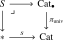 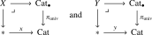 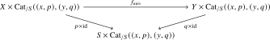
Lemma 8.7.1. There is a canonical equivalence \(\Cat_{/S}((x,p),(y,q))\iso\Map_S(X,Y)\).
Proof
By definition, the two sides are the fibers over \(p\) of the vertical maps in the commutative square
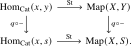
8.7.2 The subcategory of cocartesian fibrations
We now construct the subcategory \(\CoCart(S)\) of \(\Cat_{/s}\). There are three stages: we first express the cocartesian-fibration condition internally in \(\Cat\), then cut out the objects and morphisms of \(\CoCart(S)\), and finally construct the unstraightening functor.
Recognizing cocartesian fibrations internally
Remark 8.7.2. In what follows, we will use the following previously established facts about the category \(\Cat\):
• The walking morphism \([1]\) is small and thus defines an object \([1] \in \Cat\);
• There is a pullback functor \(\Fun(\pullback,\Cat) \to \Cat\) right adjoint to the constant diagram functor, see Corollary 8.5.9;
• There is a product functor \(- \times -\colon \Cat \times \Cat \to \Cat\) right adjoint to the diagonal \(\Cat \to \Cat \times \Cat\);
• For every \(d \in \Cat\), the functor \(- \times d\colon \Cat \to \Cat\) admits a right adjoint \((-)^d\colon \Cat \to \Cat\).
• For any object \(c\) in \(\Cat\) and any object \(x\) of \(c\) (i.e. any morphism \(x\colon [0]\to c\)), one can define the slice \(c_{/x}\) by forming the following pullback square in \(\Cat\).
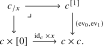
• An object \(x\) of an object \(c\) of \(\Cat\) is terminal if the projection \(c_{/x}\to c\) is an equivalence.
Construction 8.7.3. For two morphisms \(f\colon a \to c\) and \(g\colon b \to c\) in \(\Cat\), we define their directed pullback \(a \vectimes{f,g} b\) via the following pullback square in \(\Cat\):
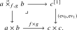
These constructions allow us to express the (co)cartesian-fibration condition internally in \(\Cat\). The external language will remain useful for defining the collection of all (co)cartesian fibrations over a given base, as well as the collection of cocartesian functors between them.
The category of cocartesian fibrations
Construction 8.7.4. Consider an object \(s\) of \(\Cat\), corresponding to a small category \(S\):
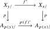 Recall that we write \(\Cat_{/S}=\Cat_{/s}\). In order to define \(\CoCart(S)\) as a subcategory of \(\Cat_{/S}\), we first define the collection \(\CoCart(S)^\simeq\) of cocartesian fibrations between small categories. Given a functor \(p\colon X\to A\) in an anima context \(\Gamma\), the proposition asserting that a morphism \(f\) of \(X\) is \(p\)-cocartesian can be expressed as follows.
For each morphism \(f\colon x\to y\) of \(X\) in context \(\Gamma\), one gets a commutative square of the form
Recall that we write \(\Cat_{/S}=\Cat_{/s}\). In order to define \(\CoCart(S)\) as a subcategory of \(\Cat_{/S}\), we first define the collection \(\CoCart(S)^\simeq\) of cocartesian fibrations between small categories. Given a functor \(p\colon X\to A\) in an anima context \(\Gamma\), the proposition asserting that a morphism \(f\) of \(X\) is \(p\)-cocartesian can be expressed as follows.
For each morphism \(f\colon x\to y\) of \(X\) in context \(\Gamma\), one gets a commutative square of the form
 hence a canonical functor
\[
\varphi_p\colon \Map_\Gamma([1],X)_{\text{$p$-coCart}}\to \Map_\Gamma([1],A)\times_{A^\simeq}X^\simeq\, ,
\]
and the property for the latter to be an equivalence is equivalent to the property that the functor \(p\) is
a cocartesian fibration in context \(\Gamma\). We thus define
\[
\iscoCartFib(p):=\isEquiv_{\Gamma}(\varphi_p)\hookrightarrow\Gamma\, .
\]
We consider now the universal functor from a small category to \(S\).
This is the functor of the form
hence a canonical functor
\[
\varphi_p\colon \Map_\Gamma([1],X)_{\text{$p$-coCart}}\to \Map_\Gamma([1],A)\times_{A^\simeq}X^\simeq\, ,
\]
and the property for the latter to be an equivalence is equivalent to the property that the functor \(p\) is
a cocartesian fibration in context \(\Gamma\). We thus define
\[
\iscoCartFib(p):=\isEquiv_{\Gamma}(\varphi_p)\hookrightarrow\Gamma\, .
\]
We consider now the universal functor from a small category to \(S\).
This is the functor of the form
 corresponding through directed univalence to the morphism
\[
\univ_{/S}\colon [1]\times (\Cat_{/S})^\simeq\hookrightarrow
[1]\times\Map([1],\Cat)\hookrightarrow [1]\times\Fun([1],\Cat)\to \Cat
\]
induced by the obvious evaluation functor.
The collection of cocartesian fibrations of the form \(p\colon X\to S\) with \(X\) small is
defined to be the proposition asserting that \(p_{\univ/S}\) is a cocartesian fibration
in context \((\Cat_{/S})^\simeq\):
\[
\CoCart(S)^\simeq:=\iscoCartFib(p_{\univ/S})\hookrightarrow(\Cat_{/S})^\simeq \, .
\]
We define as an intermediate step the full subcategory \(\CoCart(S)'\) of \(\Cat_{/S}\) spanned by
cocartesian fibrations with codomain \(S\).
By directed univalence, in context \(\Map([1],\CoCart(S)')\), there is a universal functor
between cocartesian fibrations over \(S\):
corresponding through directed univalence to the morphism
\[
\univ_{/S}\colon [1]\times (\Cat_{/S})^\simeq\hookrightarrow
[1]\times\Map([1],\Cat)\hookrightarrow [1]\times\Fun([1],\Cat)\to \Cat
\]
induced by the obvious evaluation functor.
The collection of cocartesian fibrations of the form \(p\colon X\to S\) with \(X\) small is
defined to be the proposition asserting that \(p_{\univ/S}\) is a cocartesian fibration
in context \((\Cat_{/S})^\simeq\):
\[
\CoCart(S)^\simeq:=\iscoCartFib(p_{\univ/S})\hookrightarrow(\Cat_{/S})^\simeq \, .
\]
We define as an intermediate step the full subcategory \(\CoCart(S)'\) of \(\Cat_{/S}\) spanned by
cocartesian fibrations with codomain \(S\).
By directed univalence, in context \(\Map([1],\CoCart(S)')\), there is a universal functor
between cocartesian fibrations over \(S\):
 Asserting that \(f_\univ\) is a cocartesian functor over \(S\) in context \(\Map([1],\CoCart(S)')\)
thus defines a collection of morphisms in \(\CoCart(S)'\):
\[
\Map([1],\CoCart(S)')_{\CoCart}
:=\isCocart(f_\univ)\hookrightarrow \Map([1],\CoCart(S)')\hookrightarrow\Map([1],\Cat_{/S})\, .
\]
We finally define \(\CoCart(S)\) as the subcategory of \(\Cat_{/S}\) generated by \(\Map([1],\CoCart(S)')_{\CoCart}\):
\[
\CoCart(S)=\langle \Map([1],\CoCart(S)')_{\CoCart} \rangle_{\Cat_{/S}}\, .
\]
By definition, a functor \(f\colon B\to\Cat_{/S}\) factors through \(\CoCart(S)\) if and only if it sends each object of \(B\)
to cocartesian fibrations over \(S\) and each morphism of \(B\) to cocartesian functors between cocartesian fibrations over \(S\).
Asserting that \(f_\univ\) is a cocartesian functor over \(S\) in context \(\Map([1],\CoCart(S)')\)
thus defines a collection of morphisms in \(\CoCart(S)'\):
\[
\Map([1],\CoCart(S)')_{\CoCart}
:=\isCocart(f_\univ)\hookrightarrow \Map([1],\CoCart(S)')\hookrightarrow\Map([1],\Cat_{/S})\, .
\]
We finally define \(\CoCart(S)\) as the subcategory of \(\Cat_{/S}\) generated by \(\Map([1],\CoCart(S)')_{\CoCart}\):
\[
\CoCart(S)=\langle \Map([1],\CoCart(S)')_{\CoCart} \rangle_{\Cat_{/S}}\, .
\]
By definition, a functor \(f\colon B\to\Cat_{/S}\) factors through \(\CoCart(S)\) if and only if it sends each object of \(B\)
to cocartesian fibrations over \(S\) and each morphism of \(B\) to cocartesian functors between cocartesian fibrations over \(S\).
The unstraightening functor
Construction 8.7.5. Given \(S\) as above, we now construct a functor \[ \Un\colon \Fun(S,\Cat) \to \Cat_{/S}. \] The intended assignment is simple: a functor \(S\to\Cat\) is sent to the small cocartesian fibration that it classifies, and a natural transformation is sent to the corresponding cocartesian functor. To assemble these assignments into a functor, we work uniformly in an arbitrary parameter category \(B\).
Given a category \(B\) and a functor \(\Phi\colon B\to\Fun(S,\Cat)\),
we may uncurry \(\Phi\) into a functor of the form
\[
F\colon B \times S \to \Cat
\]
and then consider the small cocartesian fibration classified by \(F\):
\[
p\colon E \to B \times S\, .
\]
Observe that the projection map \(\pr_B\colon B \times S \to B\) sits in a pullback square of the form
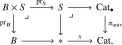
We may regard the functor \(p\colon E \to B \times S\) as a functor over \(B\) in this way, and it follows from Lemma 4.7.7 that \(p\) is a cocartesian functor over \(B\). By directed univalence of \(\Cat\), more specifically by Theorem 8.3.15, it follows that \(p\) corresponds to a natural transformation \(e \to \const_s\) of functors \(B \to \Cat\). But by Lemma 4.3.2 such a natural transformation precisely corresponds to a functor \[ \Un(\Phi)\colon B \to \Cat_{/S} \] of the desired form. Consider now \(B=\Fun(S,\Cat)\) and the identity of \(B\). The previous construction applied to the identity of \(\Fun(S,\Cat)\) defines a functor of the desired type: \[ \Un\colon \Fun(S,\Cat) \to \Cat_{/S}\, . \]
Lemma 8.7.6. The functor \(\Un\colon \Fun(S,\Cat) \to \Cat_{/S}\) lands in the subcategory \(\CoCart(S)\).
Proof
By definition of a subcategory it suffices to check this on individual morphisms in \(\Fun(S,\Cat)\).
Let us check what this functor does on objects. Note that the above construction is functorial in \(B\), in the sense that if we precompose \(F\colon B \times S \to \Cat\) by the functor \(g\times \id_S\colon B' \times S \to B \times S\) induced by some functor \(g\colon B' \to B\), we will end up with the composite \(B' \xrightarrow{g} B \xrightarrow{\Un} \Cat_{/S}\). So to compute \(\Un(f)\) for some functor \(f\colon S \to \Cat\), we may directly do the above construction where we replace \(B\) by \(*\). But then the natural transformation \(e \to \const_s\) is just the morphism in \(\Cat\) corresponding under directed univalence to the cocartesian fibration \(p\colon E \to S\) classified by the given functor \(f\colon S \to \Cat\). So on objects we see that it does indeed factor through \(\CoCart(S)\).
On morphisms, the proof is similar. It suffices to interpret how the functor \(\Un\) interprets cocartesian fibrations with small fibers of the form
\[
p\colon E\to [1]\times S
\]
as a morphism in \(\Cat_{/S}\). Let \(l\) be a \(p\)-cocartesian lift of the
term \(\id_{[1]}\times p_0\colon [1]\times E_0\to [1]\times S\) extending the term given by the canonical
embedding \(\iota_0\) of the fiber \(E_0\) into \(E\) obtained from Lemma 8.2.2.
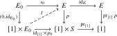
Lemma 8.7.7. The functor \(\Un\colon \Fun(S,\Cat) \to \CoCart(S)\) is fully faithful.
Proof
Let us consider for \(i=0\) and \(i=1\) a pullback square of the following form.
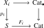 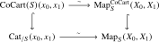
Theorem 8.7.8 (Straightening/unstraightening). For every small category \(S\), the functor \[ \Un\colon \Fun(S,\Cat) \iso \CoCart(S) \] is an equivalence.
Proof
By virtue of the preceding lemma and of the fundamental theorem of category theory (Theorem 6.3.8), it suffices to prove that the functor \(\Un\) has a section. We observe that a functor \(\Phi\colon B \to \Cat_{/S}\) admits a lift \(\widetilde{\Phi}\colon B \to \Fun(S,\Cat)\) along \(\Un\) if and only if it factors through \(\CoCart(S)\): this is precisely what Proposition 6.5.15 means. Considering \(B=\CoCart(S)\), and \(\Phi\) the canonical embedding of \(\CoCart(S)\) into \(\Cat_{/S}\), this proves that the functor \(\Un\) has a section.
Corollary 8.7.9. For every small anima \(\Gamma\), there is a canonical equivalence of the form \[ \Un\colon \Fun(\Gamma,\Cat)\iso\Cat_{/\Gamma}\, . \]
Proof
For any functor \(p\colon X\to \Gamma\), identity morphisms in \(X\) provide cocartesian lifts of morphisms in \(\Gamma\): their images need only be isomorphic to the specified base morphisms. Moreover, every functor over \(\Gamma\) preserves these lifts. Thus \[ \CoCart(\Gamma)=\Cat_{/\Gamma} \] for any small anima \(\Gamma\). The corollary is thus a special case of the previous theorem.
8.7.3 Straightening/unstraightening for left fibrations
Under straightening, anima-valued functors correspond to left fibrations. We now express this correspondence as an equivalence of categories.
Construction 8.7.10. Let \(A\) be a small category, with groupoid-core inclusion \(\iota_A\colon A^\simeq \hookrightarrow A\).
We define the category \(\LFib(A)\) of left fibrations over \(A\) as the full subcategory
\[
\LFib(A) \subseteq \CoCart(A) \subseteq \Cat_{/A}
\]
spanned by those cocartesian fibrations \(B \to A\) which are in fact left fibrations (i.e. have
anima-valued fibers). In other words, it is defined by forming the pullback square below.
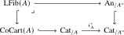 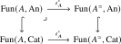
Corollary 8.7.11. For every small anima \(\Gamma\), there is a canonical equivalence of the form \[ \Un\colon \Fun(\Gamma,\An)\iso\An_{/\Gamma}\, . \]
Proof
Since left fibrations are precisely conservative cocartesian fibrations, and any functor with codomain an anima is a cocartesian fibration, left fibrations with anima codomain are precisely functors between animae. Thus Corollary 8.7.9 induces the claimed equivalence.
Proposition 8.7.12 ((Un)Straightening for left fibrations). For every small category \(A\), the straightening/unstraightening equivalence from Theorem 8.7.8 restricts to an equivalence \[ \Un\colon \Fun(A,\An) \iso \LFib(A). \]
Proof
For a cocartesian fibration \(p\colon X\to A\), the property of being a left fibration is equivalent to being conservative or, equivalently, to all fibers of \(p\) being animae. In other words, \(p\) is a left fibration if and only if the pullback \(A^\simeq\times_AX\) is an anima. In view of the two pullback squares above, in order to prove this proposition, by virtue of Theorem 8.7.8 and of Corollary 8.7.9, it suffices to prove the special case where \(A\) is an anima. This is Corollary 8.7.11.
8.7.4 Computations with unstraightening
Straightening allows us to pass between constructions on \(\Cat\)-valued functors and constructions on cocartesian fibrations. We now make this relation explicit for functor categories and coslices. We also record results about products in an unstraightening.
Proposition 8.7.13 (Functor categories in cocartesian unstraightenings). Let \(p\colon E\to C\) be a small cocartesian fibration classified by a functor
\(F\colon C\to\Cat\), let \(I\) be a small category, and let \(i\) be its associated object of
\(\Cat\). Define \(q\colon Q\to C\) by the pullback square
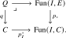
Proof
Apply \(\Fun(I,-)\) to the pullback square classifying \(p\). Since functor categories preserve pullbacks, both squares in the following diagram are pullbacks:
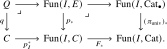
Proposition 8.7.14 (Coslices in cocartesian unstraightenings). Let \(p\colon E \to B\) be a small cocartesian fibration classified by a functor \(F\colon B \to \Cat\), and let \(X\) be an object of the fiber \(F(b)\). The induced functor \[ p_{X/}\colon E_{X/}\longrightarrow B_{b/} \] is a cocartesian fibration classified by the functor \[ B_{b/}\longrightarrow\Cat,\qquad (f\colon b\to c)\longmapsto F(c)_{f_!X/}. \]
Proof
There is a pullback square
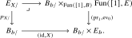
By Corollary 6.5.8, the source evaluation functor sends a cocartesian morphism in the upper right corner to a \(p\)-cocartesian morphism over the identity of \(b\), hence to an isomorphism in \(E_b\). The right vertical map is therefore a cocartesian functor over \(B_{b/}\), as is the bottom map. It follows from (Cat3) that \(p_{X/}\) is a small cocartesian fibration. We define the functor in the statement to be its classifying functor.
To compute its values, let \(f\colon b\to c\). Composition with a \(p\)-cocartesian lift \(X\to f_!X\) gives an equivalence \[ F(c)_{f_!X/}\simeq (E_{X/})_f \] where the right-hand side denotes the fiber of \(p_{X/}\) over \(f\). Indeed, the square of coslices expressing that \(X\to f_!X\) is \(p\)-cocartesian is a pullback; taking its fiber over \(\id_c\) gives the displayed equivalence.
Finally, let \(u\colon f\to f'\) be a morphism in \(B_{b/}\), represented by a morphism \(u\colon c\to c'\) and an identification \(f'=uf\). The pullback construction above shows that a cocartesian lift starting in \(X\to Y\) is given by postcomposition with the \(p\)-cocartesian lift \(Y\to u_!Y\). Under the displayed equivalences, transport therefore sends a map \(f_!X\to Y\) to the composite \[ f'_!X = u_!f_!X\longrightarrow u_!Y. \]
Proposition 8.7.15 (Products in cocartesian unstraightenings). Let \(p\colon E\to B\) be a small cocartesian fibration classified by a functor \(F\colon B\to\Cat\). If \(B\) admits finite products and \(F\) preserves them, then \(E\) admits finite products and \(p\) preserves them. More precisely, let \((X_a\in F(b_a))_{a\in A}\) be a finite family, and write \(b=\prod_{a\in A}b_a\). Under the equivalence \[ F(b)\simeq\prod_{a\in A}F(b_a), \] let \(X\in F(b)\) correspond to the tuple \((X_a)_{a\in A}\). Then the \(p\)-cocartesian lifts \(X\to X_a\) of the product projections \(b\to b_a\) exhibit \(X\) as the product of the \(X_a\) in \(E\).
Proof
For an object \(Z\in F(c)\), the proposed product cone gives a commutative square
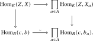
Remark 8.7.16. The dual statements describe slices and finite coproducts in cartesian unstraightenings. We can obtain them once opposite categories and cartesian straightening have been constructed in Section 12.1 and Theorem 12.4.10.